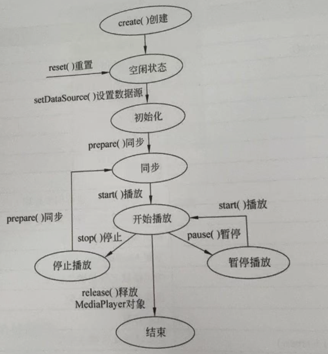
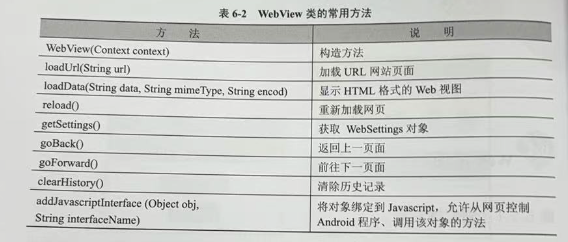

Android 开发笔记
安卓系统及其开发过程
Android 的系统架构
- 应用程序层
- 电话拨号程序
- 短信程序
- 日历
- 音乐播放器
- 浏览器
- 联系人管理程序
- 应用程序框架层
- 活动页管理
- 窗口管理
- 内容供应
- 视图系统
- 包管理
- 电话管理
- 资源管理
- 位置管理
- 通知管理
- 系统运行库层
- 程序库
- Android 运行时库
- 该核心库提供了 Java 编程语言核心库的大多数功能，Android 系统的 Dalvik 虚拟机也包含在该运行时库中
- Linux 核心层
Android 开发分类
- 系统移植开发
- Android 应用程序开发
Android 应用程序开发过程
- 在 Android Studio 集成环境中生成应用项目框架
- 修改或编写 XML 源程序
- 修改或编写 Java 源程序
- 调用模拟器运行应用程序
Android 项目结构
- mainfests
- mainfest：XML 文件的根节点，包含了 package 中的所有内容
- xmlns:android：命名空间声明
- package：应用的包名
- uses-sdk：应用的目标 SDK 版本
- application：声明一些全局属性，如标签、图标、必要的权限等
- android:icon：应用的图标
- android:label：应用的名称
- activity：与用户交互的图形界面
- android:name：默认启动的 Activity
- intent-filter：声明一组组件支持的 intent 值
- action：声明目标组件执行的 intent 动作
- category：指定目标组件支持的 intent 类别
- java：源代码、测试代码
- res：资源目录，存储所有的资源
- drawable：存放图片资源
- layout：存放界面 XML 布局文件
- mipmap：存放系统的图片资源
- values：存放字符串、颜色、尺寸、数组、主题、类型等资源
- raw：任意类型的文件，一般是音频、视频、图片、文档
- assets：任意类型，与 raw 相比，不会在 R 类中生成 id
- values：存储 app 引用的信息
- colors.xml：颜色定义
- strings.xml：字符串定义
- dimens.xml：存储了一些公用的 dip 值
- styles.xml：样式定义
- Gradle Scripts：build.gradle 为项目的 gradle 配置文件
Android 用户界面设计
用户界面设计和 View 类
- 应用界面由 View 类和 ViewGroup 对象构建
- ViewGroup 对象都是 View 类的子类
- View 类是所有可视化组件的共同父类
- View 类的常用属性和方法：
- android:background、setBackgroundColor：设置背景颜色
- android:id、setId：设置 View 的 id
- android:alpha、setAlpha：设置 View 的透明度，取值范围为 0～1
- android:view、findViewById：通过 id 获取 View 对象
- android:visibility、setVisibility：设置组件的可见性
- android:clickable、setClickable：设置组件是否可以点击
Android 布局管理
- ContraintLayout
- LinearLayout
- FrameLayout。将组件放到左上角的位置，当添加多个组件时，后面的组件将遮盖之前的组件
- TableLayout
android:shrinkColumns属性设置表格的 列数<TableRow>标签设置表格的 行数android:layout_column设置组件属于 哪一列
- GridLayout。Android 4.0 引入的布局
alignmentMode：指定组件的 对齐方式columnCount：指定 列数rowCount：指定 行数layout_columnSpan：设置组件 占据列数layout_rowSpan：设置组件 占据行数
布局文件的重要属性
- 设置组件大小的单位
- px：屏幕上的发光点
- dp：设备独立像素，支持多分辨率的抽象单位
- sp：比例像素
Button
- java 的类都是 Object 类的子类，View 类也继承自 Object 类，TextView 类继承自 View 类，Button 类继承自 TextView 类
文本编辑框也继承自 View 类

列表组件类

- android.R.layout.simple_list_item_1：单一文本项
- android.R.layout.simple_list_item_2：一行 title，一行 text
- android.R.layout.simple_list_item_single_choice：单选列表项
- android.R.layout.simple_list_item_multiple_choice：多选列表项
多个用户界面的程序设计
显/隐式意图
- 根据“目标组件是否明确指定”，可分为两大类：显示式意图（Explicit Intent）和隐式意图（Implicit Intent）
- 显式意图：开发者在 Intent 中直接 指明目标组件的完整名称（包名 + 类名），或通过 setClass() / setComponent() / setClassName() 等方法将目标 Activity / Service 明确指定。
- 隐式意图：不指明具体组件，而是 描述要执行的“动作 + 数据 + 类别 + 额外信息”
页面切换与传递参数值
- Intent 的属性
- 动作（Action）
- 数据（Data）
- 类别（Category）
- 类型（Type）
- 组件（Component）
- 扩展数据（Extra）
在 Activity 之间传递数据
- Bundle 的方法
putStringremovegetString
- Intent 操作 Bundle 组件的方法
getExtrasputExtras
菜单设计
- 选项菜单
- 上下文菜单
- 子菜单
图形与多媒体处理
绘制几何图形
- Canvas
- Paint
- Path
简单的触摸屏事件
- MotionEvent.ACTION_DOWN：在屏幕上点击
- MOtionEvent.ACTION_UP：松开手指
- MotionEvent.ACTION_MOVE：移动手指
多媒体处理播放器
- MediaPlayer
- 常用方法
- create() ：创建多媒体播放器
- prepare() ：准备多媒体资源，进行同步处理
- prepareAsync() ：准备多媒体资源，进行异步处理
- release() ：释放资源
- reset() ：重置播放器
- seekTo() ：调整播放位置
- setDataSource() ：设置多媒体资源路径
- setOnCompletionListener() ：设置播放完成监听器
- stop() ：停止播放
- start() ：开始播放
- pause() ：暂停播放
- 生命周期
- 
- 常用方法
后台服务与系统服务
后台服务
- 后台服务（Service）是一种类似于 Activity 的组件，但 Service 没有用户操作界面，也不能自己启动，主要作用是提供后台服务调用，即使用户关闭应用界面，Service 也不会停止。
- Service 的生命周期
- onCreate()：创建 Service
- onStartCommand()：启动 Service
- onDestroy()：销毁 Service
- 常用方法
- 一个服务只能创建一次、销毁一次，但可以开始多次
- 设置一个后合服务的应用程序大致有以下几个步骤
- 创建 Service 的子类
- 编写 onCreate 方法，创建后台服务:
- 编写 onStartCommand 方法，启动后台服务:
- 编写 onDestoy 方法，终止后台服务，并删除所有调用。
- 创建启动和控制 Service 的 Activity：
- 创建 Intent 对象，建立 Activity 与 Service 的关联:
- 调用 Activity 的 startService(Intent)方法启动 Service 后台服务:
- 调用 Activity 的 stopService(Intent)方法关闭 Service 后台服务、
- 修改配置文件 AndroidManifest.xml。在配置文件 AndroidManifest.xml 的
标签中添加以下代码: <service android:enabled=""true" android:name=".Audiosry" />
- 创建 Service 的子类
onStartCommand()方法的返回值- 如果希望 Service 一直存活并且保留上次启动它的 intent 的数据，那么 return START_REDELIVER_INTENT；
- 如果只希望 Service 一直存活不需要 intent 中的数据，那么return START_STICKY；
- 如果希望 Service 执行完指定的任务后销毁，那么 return START_NOT_STICKY；
- 如果没有什么要求那么直接 return super.onStartCommand ；

网络通信
Web 视图
- WebView 的常用方法
- 
- 记得要设置：
android:usesCleartextTraffic="true"
复习
老师给的重点逐字词分析
- ImageView 图片属性 资源路径；
- 图片属性
-
属性 对应方法 说明 android:maxHeight setMaxHeight(int) 为显示图像提供最大高度的可选参数 android:maxWidth setMaxWidth(int) 为显示图像提供最大宽度的可选参数 android:scaleType setScaleType(ImageView.ScaleType) 控制图像适合 ImageView 大小的显示方式 (见表 2-13) android:src setImageResource(int) 获取图像文件的路径 - 其中 scaleType 的属性
-
属性值常量 值 说明 matrix 0 用矩阵来绘图 fitXY 1 拉伸图像（不按宽高比例）以填充 View 的宽高 fitStart 2 按比例拉伸图像，拉伸后图像的高度为 View 的高度，且显示在 View 的左边 fitCenter 3 按比例拉伸图像，拉伸后图像的高度为 View 的高度，且显示在 View 的中间 fitEnd 4 按比例拉伸图像，拉伸后图像的高度为 View 的高度，且显示在 View 的右边 center 5 按原图大小显示图像，当图像宽高大于 View 的宽高时，截取图像中间部分显示 centerCrop 6 按比例放大原图直至等于某边 View 的宽高显示 centerInside 7 当原图宽高等于 View 的宽高时，按原图大小居中显示；否则，将原图缩放至 View 的宽高居中显示
-
- 其中 scaleType 的属性
-
- 资源路径
- 如何设置：通过设置图像组件的
srcCompat属性设置图片资源路径，设置为形如：@drawable/image_name - 图片资源存在于哪里：
res\drawable
- 如何设置：通过设置图像组件的
- 图片属性
- 注意各种功能实现的类的类名，各种组件基本用法，各种布局的特性用法等，各章节都要注意；
-
布局特性用法
-
ContraintLayout
-
LinearLayout
- FrameLayout。将组件放到左上角的位置，当添加多个组件时，后面的组件将遮盖之前的组件
- TableLayout
android:shrinkColumns属性设置表格的 列数。如android:shrinkColumns="1, 2, 3"表示表格有 3 列，编号为 1、2、3 列<TableRow>标签设置表格的 行数android:layout_column设置组件属于 哪一列
- GridLayout。Android 4.0 引入的布局
alignmentMode：指定组件的 对齐方式columnCount：指定 列数rowCount：指定 行数layout_columnSpan：设置组件 占据列数layout_rowSpan：设置组件 占据行数
- 布局类型 看布局文件写界面；
- 菜单，对话框，消息提示，后台服务类用法，数据库等等
- 菜单
- 选项菜单
- 要重写的两个方法：onCreateOptionMenu 和 onOptionsItemSelected
- 所有可以重写的方法
-
方法 说明 onCreateOptionsMenu(Menu menu) 用于初始化菜单，menu 为 Menu 对象实例 onPrepareOptionsMenu(Menu menu) 改变菜单状态，在菜单显示前调用 onOptionsMenuClosed(Menu menu) 菜单被关闭时调用 onOptionsItemSelected(MenuItem item) 菜单项被点击时调用，即菜单项的监听方法
-
- 所有可以重写的方法
- 设计菜单项要用 Menu、MenuItem，一个 Menu 代表一个菜单，在 Menu 对象中可以添加菜单项 MenuItem 对象，也可以添加子菜单
- 添加菜单项 MenuItem 的方法：add()
- groupId，组别，不分组写 Menu.NONE；
- itemId，必须写，像资源 id 一样的
- order，哪个菜单项在前面由这个参数的大小决定
- title，菜单项的显示文本
- 要重写的两个方法：onCreateOptionMenu 和 onOptionsItemSelected
- 上下文菜单
- 上下文菜单最常见的是用于 ListView 的 item
- 要重写的两个方法：onCreateContextMenu 和 onContextItemSelected
- 要为视图注册上下文菜单：registerForContextMenu(View view)
- 对话框
- AlertDialog 对话框是应用程序设计最常用的对话框
- 常用方法
-
方法 说明 AlertDialog.Builder(Context) 对话框 Builder 对象的构造方法 create(); 创建 AlertDialog 对象 setTitle(); 设置对话框标题 setIcon(); 设置对话框图标 setMessage(); 设置对话框的提示信息 setItems(); 设置对话框要显示的一个 list setPositiveButton(); 在对话框中添加 yes 按钮 setNegativeButton(); 在对话框中添加 no 按钮 show(); 显示对话框 dismiss(); 关闭对话框 - 创建对话框：
1 2 3 4 5 6 7 8 9 10 11 12 13 14 15 16 17
Builder builder = new AlertDialog.Builder(this); builder.setTitle("标题"); builder.setMessage("提示信息"); builder.setPositiveButton("确定", new DialogInterface.OnClickListener() { @Override public void onClick(DialogInterface dialog, int which) { // 点击确定按钮的监听 } }); builder.setNegativeButton("取消", new DialogInterface.OnClickListener() { @Override public void onClick(DialogInterface dialog, int which) { // 点击取消按钮的监听 } }); builder.create(); builder.show(); - 使用 XML 文件作为对话框的布局时，要注意
login = (LinearLayout)getLayoutInflater().inflate(R.layout.login, null);。 这里 inflate() 是将组件从一个 XML 中定义的布局找出来。在一个 Activity 中如果直接用 findViewById()，对应的是 setConentView() 中的那个 Layout 中的组件。如果 Activity 中用到其他 Layout 布局，比如对话框上的 Layout，还要设置对话框上的 Layout 中的组件(像图片 ImageView、文字 TextView)上的内容，这就必须用 inflate() 先将对话框上的 Layout 找出来，然后再用这个 Layout 对象找到它上面的组件 - 其他常用对话框
- 进度条对话框
- 日期对话框
- 时间对话框
- 消息提示
-
- 消息提示类不获得焦点
- makeText() 之后必须要 show() 才能显示
-
方法 说明 Toast(Context context)Toast 的构造方法，构造一个空的 Toast 对象 makeText(Context context, CharSequence text, int duration)以特定时长显示文本内容，参数 text 为显示的文本，参数 duration 为显示的时间，较长时间取值 LENGTH_LONG，较短时间取值LENGTH_SHORTsetDuration(int duration)设置存续时间 setView(View view)设置要显示的视图 setGravity(int gravity, int xOffset, int yOffset)设置提示信息在屏幕上的显示位置 setText(int resId)更新 makeText()方法所设置的文本内容show()显示提示信息 LENGTH_LONG提示信息显示较长时间的常量 LENGTH_SHORT提示信息显示较短时间的常量 - 后台服务类用法
- Service 的生命周期
- onCreate()：创建 Service
- onStartCommand()：启动 Service
- onDestroy()：销毁 Service
- 常用方法
-
方法 说明 onCreate()创建后台服务 onStartCommand(Intent intent, int flags, int startId)启动后台服务 onDestroy()销毁后台服务，并删除所有调用 sendBroadcast(Intent intent)继承父类 Context 的 sendBroadcast()方法，实现发送广播机制的消息 onBind(Intent intent)与服务通信的信道进行绑定，服务程序必须实现该方法 onUnbind(Intent intent)撤销与服务信道的绑定
-
- 用法：
- 创建 Service 的子类，重写 onCreate()、onStartCommand()、onDestroy() 方法
- 在 AndroidManifest.xml 文件中注册 Service：
<service android:name=".MyService" /> - 启动 Service：
Intent intent = new Intent(this, MyService.class); startService(intent); - 停止 Service：
Intent intent = new Intent(this, MyService.class); stopService(intent);
- 一个服务个服务只能创建一次、销毁一次，但可以开始多次
onStartCommand()方法的返回值- 如果希望 Service 一直存活并且保留上次启动它的 intent 的数据，那么 return START_REDELIVER_INTENT；
- 如果只希望 Service 一直存活不需要 intent 中的数据，那么return START_STICKY；
- 如果希望 Service 执行完指定的任务后销毁，那么 return START_NOT_STICKY；
- 如果没有什么要求那么直接 return super.onStartCommand ；
- 数据库
- 内部存储空间和外部存储空间
- 示意图：
- 外部存储空间可以通过插入 SD 卡来扩展容量
- 内部存储空间
- 根目录：data\data
- 应用程序数据目录为：data\data\包名。SQLite 数据库、保存在应用程序中的资源文件以及 SharedPreferences 文件都在这里
- 外部存储空间
- 根目录：storage\emulated\0。其下有一些特定类型的子目录，可以通过 Environment.getExternalStorageDirectory(String type) 函数获取。如警报铃声、相机拍摄的图片/视频等
- 若插入 SD 卡的话，则 SD 卡的根目录为：storage\emulated\1
- 示意图：
- SQLite 数据库
- SQLiteDatabase 类。主要类，主要由此类执行增删改查操作
- 常用方法
-
方法 说明 openOrCreateDatabase(String path, SQLiteDatabase.CursorFactory factory)打开或创建数据库 openDatabase(String path, SQLiteDatabase.CursorFactory factory, int flags)打开指定的数据库 insert(String table, String nullColumnHack, ContentValues values)新增一条记录 delete(String table, String whereClause, String[] whereArgs)删除一条记录 query(String table, String[] columns, String selection, String[] selectionArgs, String groupBy, String having, String orderBy)查询一条记录 update(String table, ContentValues values, String whereClause, String[] whereArgs)修改一条记录 execSQL(String sql)执行一条 SQL 语句 close()关闭数据库
-
- 常用方法
- SQLiteOpenHelper 类。辅助类，主要用于创建数据库、管理数据库版本
- 常用方法
-
方法 说明 onCreate(SQLiteDatabase)首次生成数据库时调用该方法 onOpen(SQLiteDatabase)调用已经打开的数据库 onUpgrade(SQLiteDatabase, int, int)升级数据库时调用 getWritableDatabase()以读/写方式创建或打开数据库 getReadableDatabase()创建或打开数据库
-
- 常用方法
- SQLiteDatabase 类。主要类，主要由此类执行增删改查操作
- 对数据库操作
- 创建数据库
- 方法一：SQLiteDatabase 对象 openDatabase() 方法或 openOrCreateDatabase() 方法
- 方法二：SQLiteHelper 的子类
- 方法三：使用 Activity 继承于父类 android.content.Context 创建数据库的方法 openOrCreateDatabase()
- openOrCreateDatabase(name, mode, factory) 中
- name 为数据库名称
- mode 为打开的模式
- MODE_PRIVATE：只可访问或调用模式，默认模式
- MODE_WORLD_READABLE：只读模式
- MODE_WORLD_WRITEABLE：只写模式
- factory 为数据库创建工厂，一般为 null
- 删除数据库：
MainActivity.this.deleteDatabase("mydatabase.db");
- 创建数据库
- 对数据表操作
- 创建数据表
- 编写创建表 SQL 语句
- 调用 SQLiteDatabase 的 execSQL() 执行 SQL 语句
- 删除数据表
- 编写删除表 SQL 语句
- 调用 SQLiteDatabase 的 execSQL() 执行 SQL 语句
- 创建数据表
- 对记录操作
- 方法一：使用 SQL 语句进行操作
- 方法二：使用 SQLiteDatabase 对象的相应方法
- 增
- SQLiteDatabase 的 insert(String table, String nullColumnHack, ContentValues values) 方法。
- table，增加记录的数据表
- nullColumnHack，空列的默认值，一般为 null
- values，ContentValues 对象
- ContentValues 类。用于存储一组键值对数据，可以用于向数据库插入数据
- 示例
java ContentValues values = new ContentValues(); values.put("name", "Tom"); values.put("age", 20); db.insert("person", null, values);
- SQLiteDatabase 的 insert(String table, String nullColumnHack, ContentValues values) 方法。
- 删
- SQLiteDatabase 的
delete(String table, String whereClause, String[] whereArgs)方法 - 示例
java db.delete("person", "name=?", new String[] {"Tom"});
- SQLiteDatabase 的
- 改
- SQLiteDatabase 的
update(String table, ContentValues values, String whereClause, String[] whereArgs)方法。- whereClause，修改条件
- whereArgs，修改条件的参数
- 示例 ```java ContentValues values = new ContentValues(); values.put("age", 25); db.update("person", values, "name=?", new String[] {"Tom"});
- SQLiteDatabase 的
- 查
- SQLiteDatabase 的
query(String table, String[] columns, String selection, String[] selectionArgs, String groupBy, String having, String orderBy)方法。- columns，查询的列名
- selection，查询条件
- selectionArgs，查询条件的参数
- groupBy，分组条件
- having，过滤条件
- orderBy，排序条件
- 示例
1 2 3 4 5 6 7
Cursor cursor = db.query("person", null); while (cursor.moveToNext()) { String name = cursor.getString(cursor.getColumnIndex("name")); int age = cursor.getInt(cursor.getColumnIndex("age")); // do something with name and age } cursor.close(); - 对查询结果进行处理
- query 查询的数据会封装到 Cursor 对象中，Cursor 常用方法如下
- moveToFirst()：移动到第一条记录
- moveToLast()：移动到最后一条记录
- moveToNext()：移动到下一条记录
- moveToPosition(int position)：移动到指定位置的记录
- moveToPrevious()：移动到上一条记录
- moveToNext()：移动到下一条记录
- isBeforeFirst()：是否位于第一条记录之前
- isAfterLast()：是否位于最后一条记录之后
- query 查询的数据会封装到 Cursor 对象中，Cursor 常用方法如下
- SQLiteDatabase 的
- 增
-
-
Android 复习 Workflow
- 做实验 x2hours
- 做题 x40mins
- 涂答案 3 页
- 做 3 页
- 对答案
- 整理错题
- 返回 1
- 看导图 x20mins
- 返回 1
错题
- 语言
- 想让软件支持简体中文、美式英语两种环境，需要在 res 目录下新建两个 values 文件夹，分别命名为 values-zh-rCH 和 values-en-rUS，并在其中分别创建 strings.xml 文件，然后分别在文件中定义字符串资源
-
配置
- Minimum Required SDK 代表 程序最低兼容的版本
- SDKManager 是 Android SDK 的管理工具，双击它可以看到所有可下载的额 Android SDK 版本
- 用于给 Activity 指定主题的属性是
theme - 用于给控件指定主题的属性是
style - 设置 Activity 的
android:theme属性可以指定主题样式 - 样式文件是在
styles目录下创建的 - 通常使用 主题 定义一个界面/整个软件的风格，使用 样式 定义控件的风格
- 在 Activity 代码中也可以引用自定义主题，只需要在
onCreate方法内添加setTheme即可 - ❌样式的标签是用来声明属性值的。
- 解析：在 Android 的
styles.xml中，属性值真正是通过<item name="属性名">值</item>来声明的；<style>标签本身只是用来定义一个样式并对这些<item>进行分组，而不是直接用来声明单独的属性值。因此说“样式的标签是用来声明属性值的”并不准确。
- 解析：在 Android 的
- Android 有自己的国际化规范和方法，布局文件中的所有文字资源只有通过
R.string.<string_name>引用才能起到效果 - 设置 Activity 的启动模式：android:launchMode
-
布局
- 在相对布局文件中，把控件显示在另外一个控件的右侧使用的属性是
layout_toRightOf - 放入绝对布局的控件需要通过
android:layout_x和android:layout_y属性来设置它的位置
- 在相对布局文件中，把控件显示在另外一个控件的右侧使用的属性是
- 其他
- gen 目录是自动生成的， 不允许 用户修改
- Android 使用 任务栈 的方式来管理 Activity 的实例
- Intent 传递类对象时，该对象需要实现 Serializable 或 Parcelable 接口
- Map 类型不能使用 Intent 传递
- 启动系统相机使用的 action 是 IMAGE_CAPTUR
- Activity 的生命周期
- 运行状态。处于屏幕最前段，可见、有焦点，可以与用户交互
- 暂停状态。
- 停止状态。
- Activity 获取焦点执行的方法是
onResume() - 当 Activity 处于运行状态时，Android 会尽可能地保持它的运行，即使出现内存不足的情况，Android 也会先杀死栈底部的 Activity，来确保可见的 Activity 正常运行
- Activity 默认的启动模式是 standard，在不指定启动模式的情况下，Acticity 使用的都是 standard 模式
- 当 Acticity 处于销毁状态时，将被清理出内存
- 关闭 Activity 的界面时，将会执行 onPause、onStop、onDestroy 方法
- 从 Activity 启动到完全出现在用户面前会执行 onCreate、onStart、onResume 三个方法
- intent 的作用是激活组件和传递参数